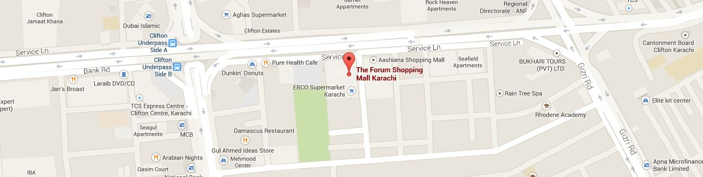

دی فورم
فورم مال کلفٹن روڈ، کراچی ، پاکستان کے مرکز پر واقع ہے . اس کی نہیں پارک ٹاورز اور ڈولمین مال ، لیکن اس کی خوبصورتی سے شاپنگ سے محبت کرنے والوں کے لئے تعمیر طور پر ایک بڑے شاپنگ مال کے طور پر . فورم مال اس طرح lacoste کی ، لیوی کی ، لیے Dockers ، Stonage ، کیمبرج اور بہت سے دوسرے کے طور پر برانڈڈ دکانوں کی ایک بڑی تعداد ہے . شہر کے ارد گرد یا ان کے پسندیدہ ضروریات حاصل کرنے کے لئے فورم کے مال کے پاس کلفٹن کے علاقے کے دورے میں رہنے والے لوگوں مئی .
زیورات ، دستکاری ، کپڑے، جوتے ، کاسمیٹکس وغیرہ مال بھی اچھے کھانے کی سہولیات موجود سمیت دکانوں کی وسیع اقسام کے ساتھ شہر کے upscale کلفٹن کے علاقے میں ایک جدید مال . مرکزی واتانکولیت : جی ہاں فوڈ کورٹ : جی ہاں وہ گروسری سٹور : جی ہاں پارکنگ گیراج : جی ہاں ڈیزائنر شاپس : زیادہ تر ماحولیات: سخت حفاظتی انتظامات کے تحت بہت پروفیشنل اور دوستانہ
فورم شہر کے امیر کلفٹن کے علاقے میں واقع ایک جدید مال ہے . یہ زیورات ، دستکاری ، کپڑے، جوتے ، کاسمیٹکس اور بہت زیادہ فروخت کی دکانوں کی وسیع اقسام پر مشتمل ہے . یہ مرکزی واتانکولیت مال بھی اچھے کھانے کے اختیارات فراہم کرتا ہے .
تحفے اور ملبوسات کو راشن سے ، یہاں کچھ کے بارے میں حاصل کر سکتے ہیں . شہر کے دوسرے بڑے مالز کا کوئی پاگل ہجوم کے ساتھ دن کے وقت میں مفت سرور پارکنگ
چھوٹے سپر مارکیٹ ریستوران کی تعداد اور چند بیچ دیا ہے کہ اعلی لیکن بہت نقصان پر روزانہ کی ضروریات اور درمیانے درجے کے معیار کی مصنوعات یکجا ...
ایڈریس
پتہ: خیابان جامی ، بلاک 9 ، کلفٹن کراچی ، پاکستان .
